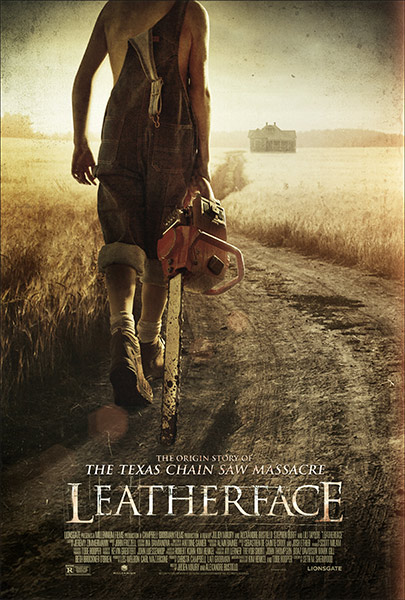
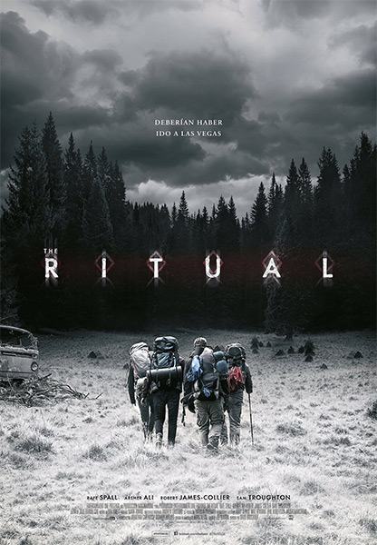
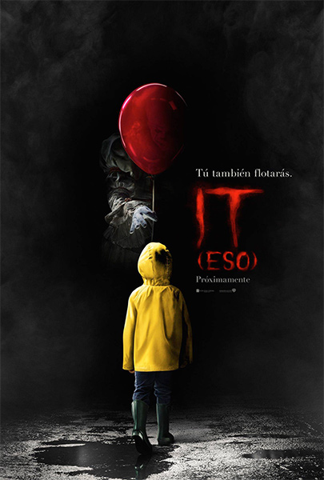
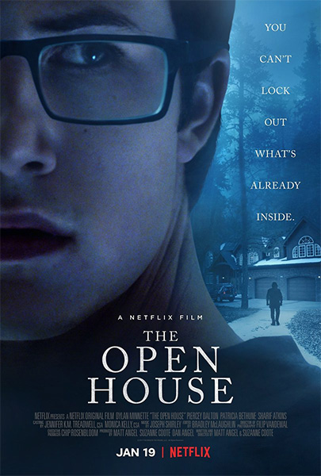
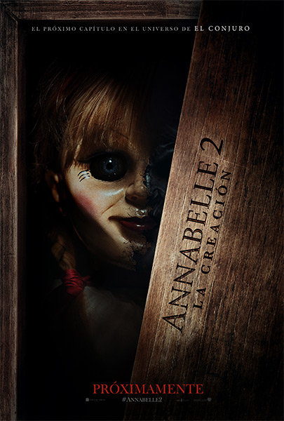

 La masacre de Texas Un adolescente Leatherface escapa de un hospital psiquiátrico con otros tres presos, secuestrando a una joven enfermera y llevándola en un viaje infernal mientras es perseguido por un hombre de ley en busca de venganza. Ver
La noche del demonio: La última llave La parapsicóloga Elise Rainier recibe una perturbadora llamada de un hombre que afirma que su casa está embrujada. Aún más inquietante es la dirección de la casa, que es donde Elise vivió cuando era niña. Ver
 El ritual Un grupo de amigos de la universidad se reúne para un viaje de senderismo a través del bosque, pero se encuentran con una amenazadora presencia entre los árboles que los está acechando. Ver
 It (Eso) Un grupo de niños se une cuando un aterrador monstruo, que toma la apariencia de un payaso, comienza a cazar niños. Basada en el libro de Stephen King. Ver
 Puertas abiertas Un adolescente y su madre se encuentran siendo asediados por fuerzas amenazadoras cuando se mudan a una nueva casa. Ver
 Annabelle 2: La creación Doce años después de la trágica muerte de su hija, un fabricante de muñecas y su esposa reciben en su casa a una monja y varias niñas de un orfanato, donde pronto se convierten en el blanco de una de las creaciones del fabricante: Annabelle. Ver